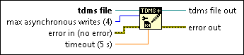

TDMS Configure Asynchronous Writes (Data Ref) Function
Owning Palette: TDMS Advanced Data Reference I/O Functions
Requires: Base Development System (Windows)
Configures the maximum number of asynchronous writes and the timeout value. The timeout value applies to all subsequent asynchronous writes. You must use this function to configure the asynchronous writes before using the TDMS Advanced Asynchronous Write (Data Ref) function.

 Add to the block diagram Add to the block diagram |
 Find on the palette Find on the palette |